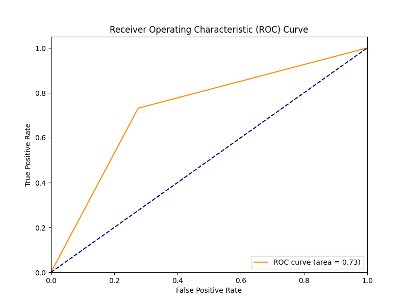

Originally made for use in a weekly tipping league, the objective was to leverage machine learning techniques to predict future AFL games.
The primary dataset was downloaded from kaggle, and consists of AFL game-by-game results from 1965 to 2022.
The raw dataset is loaded from a CSV file 'afl_game_by_game_results_1965_2022.csv'. Several columns, mostly focused on specific game events like 'tackles', 'rebound_50s', 'inside_50s', 'clearances', etc., are removed to reduce complexity and dimensionality. The dataset is then sorted by 'year' and 'round' to maintain chronological order.
Specific columns like 'goals' and 'behinds' are split into separate features for each team. Furthermore, additional fields such as 'team_score' and 'opponent_score' are derived from these. A binary target feature 'won' is created, signifying whether the team won the match or not.
Columns containing numeric game data are split into team and opponent specific statistics. The dataframe is then grouped by the 'team' column, and the 'target' feature is shifted to align with future games, representing our prediction target. Finally, any rows containing missing values in key columns are removed.
The objective function for Ridge Regression is as follows:
\[ \min_{w} || X w - y||_2^2 + \alpha ||w||_2^2 \]
where:
This objective function includes two terms: the residual sum of squares (RSS) and the regularization term. The RSS is a measure of the model's fit to the data. The regularization term is a measure of model complexity. The \( \alpha \) parameter controls the trade-off between these two objectives. A higher \( \alpha \) increases the impact of the regularization term, leading to a simpler model with smaller coefficients. A smaller \( \alpha \) places more emphasis on minimizing the RSS, which can lead to a more complex model.
In this research, we set \( \alpha \) to 1, representing a balanced compromise between model fit and complexity. The Ridge Regression model was fit using the Scikit-learn library, which uses a closed-form solution for this optimization problem, making it computationally efficient.
The Ridge Regression model was chosen for this research because of its robustness to multicollinearity. With the use of the regularization term, Ridge Regression can manage situations where input features are highly correlated, which is common in the high-dimensional datasets often encountered in sports analytics. This feature of Ridge Regression makes it particularly suitable for the task of predicting Australian Football League game outcomes.

Assessing the results achieved with RR, an accuracy of 0.728 signifies that 72.8% of the model's predictions were correct. Precision, at 0.724, reflects that 72.4% of the instances identified as positive were indeed positive. A recall score of 0.732 denotes that 73.2% of actual positive instances were correctly classified. The F1 score, a harmonic mean of precision and recall, stands at 0.728, suggesting a balanced model in terms of both precision and recall.

Upon comparison of the results, Ridge Regression demonstrated superior performance in this instance, with higher scores across accuracy, precision, recall, and the F1 score. It showcased a robust model, successfully striking a balance between predicting true positives and reducing false positives.